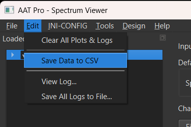
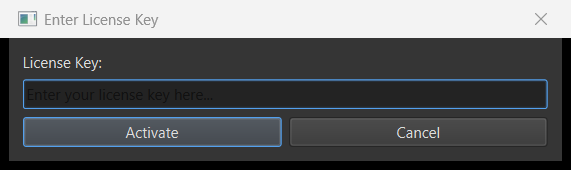

![AAT icon]()
AAT Pro User Guide
Load or record a WAV, pick a channel, and every meter, chart, and analysis tool in this window reads from that one signal. This guide walks the menu bar left to right — File to Help — the same order the toolbar reads.
Core Workflow
Everything below the menu bar exists to get a signal in, look at it, and hand it to a tool. Every analysis in Tools reads from whatever is loaded here.

Getting a signal in
Working with the loaded signal
3Channel: combo + Settings...
Selects which channel of the active file the charts, meters, and single-file analyses read. Settings... opens the shared analysis parameters every Tools feature reads from: Duration (or check Use Loaded File Duration to match the file itself), Sample Rate (44100 / 48000 / 96000 Hz), FFT Size (256–65536), Window (Hann/Hamming/Blackman/Flattop), and Overlap % (0–95).

File
Saving what you have — the recorded/loaded audio itself, or a snapshot of what's on screen.
| Item | What it does | Requires |
|---|---|---|
| Save WAV... | Saves the currently active buffer to a new .wav file. If a time range is set on the file (Select Time Range...), only that part is saved, and if a gain is set (Gain...) the saved audio includes it. | a loaded/recorded file |
| Save Plot to Image... | Exports the spectrum + waveform view as PNG/JPEG/BMP (the Fit/Pop Out buttons are hidden during capture so they don't appear in the image). | none |
| Export Report... | Opens a checklist of tools grouped into Visualization / Statistics, Spatial Analysis, and Acoustic Test Suites (12 of the 13 Tools-menu analyses — everything except Chamber Isolation). Runs every checked tool headlessly (no parameter dialogs shown) using each tool's own remembered settings — the same values its params dialog would show if you opened it interactively, or that tool's defaults if you've never changed them — against the current audio, and assembles the results into a single PDF: a cover page, then one page per tool with its title, exactly what it analysed (e.g. myfile.wav - Ch 1 vs. myfile.wav - All 3 channel(s) vs. 2 channel(s) checked, whichever is actually true for that tool), the real parameter values it ran with, and its chart image (or a skipped-reason note if that tool doesn't apply). Every page carries a faint centered watermark. If any channels are checked in Loaded Files, Waveform Statistics, Spectrogram, Sweep Analysis, Tonal Noise, Tonal Teams, and 3D Waterfall (CSD) each cover all of them (one combined page per tool); every other tool always covers just the currently selected file/channel regardless of what's checked. | a loaded file |
| Engineer Login... | Password-gated flag reserved for a future advanced-features panel — doesn't currently unlock anything in this build. | none |
| Restart Application | Saves settings and relaunches with the same arguments. Blocked while a recording or analysis is in progress. | none |
| Exit | Closes the app (same effect as the window's close button). Refuses to close while a background thread — recording, an analysis, a mic check, or the 3D Waterfall's compute — is still running. | none |
Edit
Clearing the workspace, and exporting what's already been plotted.
| Item | What it does | Requires |
|---|---|---|
| Clear All Plots & Logs | Resets both charts to their default axis ranges and clears every series plus the log panel. | none |
| Save Data to CSV | Exports the current spectrum and/or waveform curve's raw points to CSV, one file per curve. | specific channel selected + a plotted curve |
| View Log... | Opens the log window listing every analysis result and status message with a timestamp (the most recent 500 entries). It stays open alongside the main window; closing it only hides it, and the log keeps recording. | none |
| Save All Logs to File... | Writes the in-memory log list (capped at 500 entries) to a timestamped .txt file. | none |

INI-CONFIG
The Settings... panel's five values (duration_seconds, sample_rate, fft_size, window_type, overlap_percent) live in settings.ini's [SETTINGS] section and load automatically at startup, saving automatically on a normal close. This menu manages that file directly.
| Item | What it does |
|---|---|
| Load Settings from INI... | Applies the [SETTINGS] section of any chosen .ini file to the panel. |
| Load Default Settings | Resets the panel to hardcoded defaults, no file involved. |
| Save Current Settings to INI... | Writes the panel's current values out as a fresh .ini file at a location you choose. |
| INI Parameter Help... | A reference popup listing the five [SETTINGS] keys and their valid ranges. |
settings.ini reference
The menu above manages the [SETTINGS] section through a dialog; every section actually stored in the file is listed here.
| Section | Keys | Written by |
|---|---|---|
| [SETTINGS] | duration_seconds, sample_rate, fft_size, window_type, overlap_percent | The Settings panel (auto-saves on normal close) and this INI-CONFIG menu. |
| [FFT_LIMITS] | upper_limit_points, lower_limit_points | Tools > Plot FFT... > Edit Limits... |
| [DOA_ANALYSIS] | layout_type, distances_from_reference | Tools > DOA Analysis (Pairwise), automatically after a successful run. |
| [SCAN_TEST], [CHAMBER_RESPONSE], [CHAMBER_ISOLATION], [TONAL_NOISE], [TONAL_TEAMS], [SPECTROGRAM], [PLOT_FFT], [INTEL_CHANNEL_PHASE], [PROCESS_LOADED_AUDIO], [GENERATE_SIGNAL], [HISTOGRAM], [EXTRACT_AUDIO_DIFFERENCE], [SPECTRAL_SUBTRACTION], [ADAPTIVE_NOISE_CANCELLATION] | Every field of that tool's own params dialog (one key per field, named after it) — except a file-selection dropdown, which isn't persisted since Loaded Files is populated per run. | Each tool's own params dialog, the moment you click OK (independent of whether the analysis that follows succeeds), the same way [DOA_ANALYSIS] does. |
| [WAVEFORM_STATISTICS] | rms_window_ms, a_weight_skip_ms | Tools > Waveform Statistics, when its dialog is closed (the last Recalculate values). Defaults 50 / 250. |
| [LICENSE] | first_launch_date, license_key | Automatically on the very first launch on a machine, and by Help > Enter License Key on successful activation. See Help. |
The live file is %APPDATA%\AAT\settings.ini on Windows (macOS: ~/Library/Application Support/AAT/settings.ini; Linux: ~/.config/AAT/settings.ini), created automatically the first time anything needs it — there's normally no reason to create or locate it by hand. It's a separate file from the Python build's aat.ini, kept under its own name specifically so the two builds never read or overwrite each other's configuration.
If that file doesn't exist yet and a settings.ini is found next to the running executable, its [SETTINGS]/[FFT_LIMITS]/[DOA_ANALYSIS] content is copied in as the starting point for that machine's very first launch — this is how a fresh install can ship with pre-configured FFT limit curves or a DOA layout already in place, instead of starting blank. [LICENSE] is deliberately never part of that template: it always gets generated fresh, per machine, the first time the app actually runs there.
Example file, abridged (a real [FFT_LIMITS] curve runs to dozens of freq,dB pairs per line — only the first and last are shown here):
[SETTINGS] duration_seconds = 5.0 sample_rate = 44100 fft_size = 32768 window_type = Hann overlap_percent = 75 [FFT_LIMITS] upper_limit_points = 0.00,-92.12;241.70,-114.67;...;23755.37,-154.02;23998.54,-151.40 lower_limit_points = 0.00,-82.82;241.70,-105.37;...;23755.37,-144.72;23998.54,-142.10 [DOA_ANALYSIS] layout_type = circular distances_from_reference = 0.0,0.05,0.05,0.04,0.04,0.04,0.05,0.9 [LICENSE] first_launch_date = 2026-09-06 license_key = ACME-P_1a2Z_xyz789... (illustrative only — not a valid key)
Tools
Every measurement, analysis, and signal-processing feature that reads the loaded audio. Listed in menu order.

Re-scans available input devices into the device combo.
idle (not recording/checking mic/playing)A standalone calculator for the conversions that come up in acoustic and audio work. Pick a Category and type a value; the result updates as you type. Categories: Length / Distance, Temperature, Pressure and Frequency unit conversions; dB ↔ Linear Ratio (choose amplitude 20·log10 or power 10·log10); Distance Attenuation (dB change between two distances, and the SPL at the second distance); Speed of Sound & Wavelength (speed from air temperature, wavelength ↔ frequency); Mic Spacing ↔ Aliasing Frequency (highest alias-free frequency for a mic spacing, and the reverse); Multi-Source dB Sum (total level of several sources); A-Weighting Correction; Audio Electrical Levels (dBu / dBV / dBm); and RMS / Peak / Peak-to-Peak Voltage.
nonePrompts a mic layout type (circular/linear — remembers your last choice) and distances-from-reference in meters, comma-separated (remembers your last input, even if it later turns out invalid, so you can just fix it rather than retype it). The channel currently selected in the main Channel: combo is the reference mic.
Computes each channel's arrival angle relative to the reference via cross-correlation, logs every pair, then opens a visualization: mic positions, one ray per pair's angle, the averaged direction as a solid arrow, a 0° reference line, and the resulting angle as an arc — with a Save Image... button. The angle diagram is a stylised flat-plane projection (a subtle skew, not real 3D) since the geometry itself is inherently flat.
multi-channel file (2+ channels), specific channel selected as referenceRuns a sweep/THD analysis and opens a dedicated window with THD and power curves — one panel per channel if any are checked in Loaded Files (any combination across any loaded files), otherwise just the current file and channel.
loaded file, specific channel (or checked channels for multiple)Cross-channel phase analysis against the channel currently selected as reference; supports overlaying curves from repeated runs for comparison. A settings dialog offers Unwrap Phase (continuous phase vs. wrapped to ±180°, on by default), an optional custom frequency-axis range, and optional AP Step Matching — resample every curve onto a fixed list of target frequencies loaded from a CSV file (one frequency per line), matching the reference tool's --ap_step_file workflow. Export CSV... saves every plotted curve's frequency/phase points, one column pair per curve.
multi-channel file (2+ channels), specific channelWhat it checks: not a pass/fail test — a classifier. It looks at the signal's frequency-vs-time shape and identifies which of a fixed set of known stimulus types it matches: a single-step or multi-step frequency sweep, a continuous sweep tone, or a final-check pure tone; plus, separately, whether a short reference “pilot tone” is present near the start (often used to mark where the real test signal begins, or to confirm a device/mic is calibrated before the actual measurement). Use it to confirm a recording actually contains the test stimulus your protocol called for, before trusting any other analysis run on it.
How the detection works: the signal is broken into frequency “steps” using Freq Tolerance (how close two frames' frequencies must be to count as the same step) and Jump Threshold (how big a frequency change must be to count as a new step); a step only counts as genuine if it's stable enough (Variance) for at least Min Step Duration, and there must be at least Min Distinct Steps of them to call it a step-sweep. If enabled, pilot detection separately scans the first Max Pilot Search Duration seconds for a tone stable enough (Pilot Variance) for at least Min Pilot Duration.
Reading the result: the label under the chart shows the classification text — one of six fixed strings, including two different “Unknown” variants (bare Unknown means the pilot tone consumed the whole recording or left too little afterward to analyze; Unknown (Could not classify) means it genuinely tried and couldn't match a known pattern) — plus the pilot tone's frequency and duration, or Pilot: not detected. The chart itself plots the smoothed tracked frequency over time; eyeball it against what your protocol's stimulus should look like (a staircase for a step sweep, a ramp for a continuous sweep). There is no computed pass/fail here — you judge correctness by comparing the classification and step count against what you expected to record.
Steps: load the recording, select the channel to check, open Tools > Scan Test, confirm or adjust the detection parameters (they're remembered from last time), click OK, then read the classification label and frequency-tracking chart.
loaded file, specific channelPrompts a bin count, then plots an amplitude histogram for every checked channel (or the single selected channel if none are checked).
loaded fileWhat it checks: how the acoustic level at a handful of specific frequencies of interest behaves over the duration of the recording — e.g. confirming a chamber's target test tones stay present and stable for the whole measurement, spotting a dropout, drift, or an unexpected spike partway through. It does not summarize the whole file into one number; it plots one full level-vs-time curve per requested frequency so you can see exactly when and how each one changes.
How it's computed: the signal is turned into a spectrogram (a short-time Fourier transform), then for each frequency you list, the bin nearest that frequency is tracked frame-by-frame and converted to dB relative to the loudest point anywhere in the whole recording — so 0 dB always means “the loudest moment in this file,” not an absolute level. Optional A-Weighting/Gain are applied before that; optional Rolling Average smooths each curve afterward.
Reading the result: one curve per target frequency, overlaid, labeled by frequency in the legend. There's no built-in pass/fail line — you compare the curves against your own acceptance criteria (e.g. “every target tone should stay within N dB of its starting level for the whole recording,” or “no target tone should ever drop more than N dB below the loudest moment”). Watch for a curve that dips, cuts out, or spikes relative to the others.
Steps: load the recording, select the channel, open Tools > Chamber Response, edit the target frequency list (comma-separated Hz, default 200/500/1000/3000/7000/10000) and the A-weighting/gain/rolling-average options, click OK, then read the level-vs-time curves.
loaded file, specific channelWhat it checks: how many dB of sound isolation exists between two different moments in the same recording, across a range of frequencies — the classic use case is a “before/after” measurement: mark a window while a chamber door/lid is open (or a seal untreated) and a second window after it's closed (or treated), and this tells you, frequency by frequency, how much quieter the second window is than the first.
How it's computed: for each frequency in your scanned range (Start/End/Step Hz), the level inside Time Window 1 is averaged, the level inside Time Window 2 is averaged separately, and isolation at that frequency is simply the absolute difference between the two averages, in dB. A larger number means a bigger level difference between the two windows at that frequency — i.e. more isolation.
Reading the result: an Isolation (dB) vs. Frequency (Hz) curve, one point per scanned frequency. There's no automatic pass/fail — compare the curve against your own isolation spec (e.g. “need at least 20 dB of isolation across 500–5000 Hz”) and look for any frequency band where isolation is lower than expected.
Steps: load the recording, select the channel, open Tools > Chamber Isolation, set the two time windows (start/end seconds each) to bracket the “before” and “after” moments you want to compare, set the frequency sweep range and step, click OK, then read the isolation-vs-frequency curve.
loaded file, specific channelWhat it checks: whether an unwanted, persistent single-frequency (“tonal”) noise — a motor whine, a switching-supply whistle, a fan tone, etc. — shows up and lingers over time in the recording. This always tracks and plots the signal's dominant frequency frame-by-frame; two further, optional layers add real detection on top of that: Abnormal Noise Detection flags any tone within a frequency band you specify that stays above a dB threshold for at least a minimum duration, and Cumulative Noise Analysis takes the single worst (longest) such event and checks it against a maximum-allowed duration — this last check is the one place this tool gives you an explicit PASS/FAIL.
How it's computed: a spectrogram tracks the dominant frequency every frame (smoothed for the main curve). When abnormal detection is on, each frame is also searched for a noise peak inside your Freq Range that clears both a prominence and width threshold and stays within Freq Tolerance of the previous frame's peak (so a real persistent tone can be told apart from one that just happens to be loud for an instant); a peak track is only promoted to a reported “abnormal noise event” once it holds for at least Min Abnormal Duration. If cumulative analysis is also on, the single longest such event's duration is compared against Max Cumulative Duration.
Reading the result: the chart always shows the dominant-frequency curve; with abnormal detection on, it adds a shaded band showing the searched frequency range and shaded regions marking each detected event. Below the chart, one line tells you the actual verdict: “Cumulative noise analysis: disabled” if that check is off, “...no qualifying noise detected” if it's on but nothing crossed the threshold long enough, or “X Hz, Y s (PASS)” / “(FAIL)” stating the worst event's frequency and duration and whether it stayed under your allowed maximum.
Comparing several channels or files: check the channels you want in Loaded Files (any combination, from one or several files) before opening Tools > Tonal Noise. Every checked channel is analysed with the same settings, in parallel on all CPU cores, each at its own file's sample rate. The result window then shows:
- a comparison table at the top, one row per channel: the number of abnormal noise events, the longest event (duration and frequency), the most cumulative noise (frequency and total time) and its PASS/FAIL result. Click a row to jump to that channel's chart. A channel that cannot be analysed (for example a recording that is too short) shows its error in its row; the other channels are not affected.
- below it, one chart per channel, the same chart as for a single channel, each followed by its event count and cumulative result.
- Overlay all channels — replaces the per-channel charts with one chart: each channel's dominant frequency is a solid line in its own colour, its tracked noise peak a dashed line in the same colour, and each abnormal noise event a thick segment in that colour, drawn at the event's frequency from its start to its end. This shows at a glance which unit has a tone, at what frequency and when.
Hover over a line to read time and frequency; drag a box to zoom, use the mouse wheel, hold the right button to move the view, and Fit to Data (or right-click) to return to the full view. With nothing checked, Tonal Noise analyses the channel selected in the Channel: box exactly as before. Export Report follows the same rule and puts all checked channels on its Tonal Noise page.
Steps: load the recording(s), select the channel (or check several channels to compare them), open Tools > Tonal Noise, set the frequency range and dB threshold, tune peak-detection sensitivity if needed, check Abnormal Noise Detection and/or Cumulative Noise Analysis if you want the event/duration checks (leave both unchecked for a plain frequency-tracking view), click OK, then read the chart and the verdict line underneath it.
loaded file, specific channel (or checked channels for multiple)What it checks: per channel, whether the recording's overall frequency spectrum has a narrow tonal spike — a whine, hum, whistle, coil noise or resonance — that stands out abnormally against the channel's own general spectral shape. Nothing is compared against an external reference curve or spec: the channel is its own reference, so the test works on any recording without a golden sample. Each channel is judged independently and comes back PASS or FAIL, which makes this the closest thing in this app to a production-line pass/fail test.
Tonal Teams vs. Tonal Noise: two separate tools, deliberately not merged, because they answer different questions. Tonal Noise follows the dominant frequency over time to find noise events (when it starts, how long it lasts). Tonal Teams averages the whole recording into one spectrum and asks which frequencies stick out, with no time dimension. Use Tonal Teams for a steady recording (a device running, a fan, an idle-noise capture); use Tonal Noise when the tone comes and goes. (Hover either menu item to see the same distinction in the status bar.)
Quick start:
- Load the recording. To test one channel, select it in the Channel: combo and leave nothing checked in Loaded Files. To test several channels at once (from one or several files), check their boxes in Loaded Files instead — each checked channel is tested separately with the same settings.
- If you only want part of the recording, set it first with Select Time Range...; Tonal Teams analyses only that part.
- Open Tools > Tonal Teams.... The defaults (threshold 6 dB, 100 Hz–16 kHz, 1 s lead trim) are a reasonable starting point. Click OK.
- Read each panel's title for PASS/FAIL, and the red Top fails: line under a failing panel for the worst frequencies.
Settings: every value is remembered in settings.ini ([TONAL_TEAMS]) when you click OK, and reused next time and by Export Report. The FFT size is not set here: it is the FFT Size in the main Settings... dialog.
| Setting | Default | What it does |
|---|---|---|
| Threshold | 6 dB | How far the curve may rise above the baseline before that frequency counts as a failure. Lower = stricter (more fails), higher = more tolerant. A point fails only when it is more than this many dB above the baseline. |
| Gain Offset | 51 dB | A fixed number of dB added to the signal before analysis, so the plotted levels land in a convenient range (for example close to the SPL your rig produces). It shifts the curve and the baseline by exactly the same amount, so it never changes PASS/FAIL — only the numbers on the level axis and in the CSV. Because of this offset the level axis reads “dBFS + Gain Offset”, not plain dBFS. |
| Lead Trim | 1 s | Seconds cut from the start before analysis, to skip the click or ramp-up at the beginning of a recording. If the recording is shorter than this, nothing is trimmed. Applied in addition to any Select Time Range.... |
| A-Weighting | off | Applies an A-weighting filter (0 dB at 1 kHz) before the spectrum is computed, so the curve reflects how loud each frequency sounds to the ear. A smooth filter tilts the curve and the baseline together, so it has little effect on which narrow spikes fail; it mainly changes the shape and levels you see. This filter belongs to this tool and is not shared with other tools. |
| Window | Hann | Window applied to each FFT frame. Hann keeps a tone's energy in a few neighbouring bins and is the right choice almost always; Rectangular gives the sharpest bins but lets a strong tone leak across the spectrum, which can lift the baseline around it. |
| Judge Fmin / Judge Fmax | 100 Hz / 16 kHz | The frequency range that is analysed, plotted and judged. Spikes outside it are ignored. Narrow it to exclude a region you know is irrelevant (for example a test tone you injected, or the band below what your microphone or chamber can measure). |
| High-Res Fraction (1/N oct) | 192 | Resolution of the plotted curve: the FFT spectrum is regrouped into bands 1/N octave wide (1/192 octave is about 0.36 % of the frequency, e.g. 3.6 Hz wide at 1 kHz). Each band's level is the average power of the FFT bins inside it. |
| Baseline Smoothing (bands/oct) | 3 | Width of the averaging window that makes the baseline: at each frequency the baseline is the average level over a window 1/N octave wide centred there (1/3 octave by default). This decides what counts as “narrow”: a spike much narrower than the window stands out above the baseline and can fail; a bump as wide as the window or wider is absorbed into the baseline and does not. A smaller number (wider window, e.g. 1) also catches broader resonances; a larger number (narrower window, e.g. 6) makes the baseline follow the curve more closely, so only very sharp tones fail. |
| Overlap | 50 % | Overlap between consecutive FFT frames when averaging over time. Higher overlap uses the recording more evenly and gives a slightly smoother curve, at the cost of compute time. |
| Export Bins/Oct | 96 | Points per octave on the grid used for the PASS/FAIL verdict, the Top fails list and the CSV. The curve and baseline are interpolated onto this grid and compared there. |
How it's computed:
- Cut the Lead Trim from the start, apply Gain Offset and, if enabled, the A-weighting filter.
- Compute one time-averaged spectrum for the whole remaining signal: FFT frames of the main FFT Size with the chosen Window and Overlap; the power of each frequency bin is averaged over all frames, so a steady tone keeps its true level and random noise settles to its average.
- Regroup that spectrum into 1/N-octave bands (High-Res Fraction) between Judge Fmin and Fmax. This is the cyan Signal curve.
- Smooth the Signal curve over the Baseline Smoothing window to get the orange Baseline: the channel's general shape with narrow spikes averaged away.
- The threshold guide line is the baseline plus Threshold. Every plotted point above it gets a red marker.
- For the verdict, curve and baseline are resampled onto the Export Bins/Oct grid and, at each point, the excess (curve − baseline) is compared with the threshold. If at least one point in the judge range exceeds it, the channel is FAIL. The three points with the largest excess are listed as Top fails: 1000.7Hz(+40.8dB) means that at 1000.7 Hz the curve is 40.8 dB above its baseline.
Because the verdict uses the Export grid and the red markers use the plotted grid, a spike that only just touches the threshold can occasionally show a red marker on a PASS channel, or the reverse. The verdict and the Top fails list are authoritative.
Reading the result: each tested channel gets its own panel, titled with the channel's name and its verdict:
- Signal (cyan) — the measured spectrum.
- Baseline (thin orange) — the smoothed shape the signal is compared with.
- Threshold (thicker orange) — baseline + threshold; anything above this line fails.
- Red markers — the points above the threshold line.
Under a failing panel, the red Top fails: line names the worst three frequencies and their excess over the baseline. A single sharp failure usually means one discrete tone (a whine, an electrical frequency, a resonance); several failures at regular spacing (for example 100, 200, 300 Hz…) usually point to one source with harmonics.
Looking closer: every chart is interactive. Rest the mouse on a curve or a red marker to read its exact frequency and level (the label names the line: Signal, Baseline, Threshold or Fail). Drag a box with the left button to zoom into that area, turn the mouse wheel to zoom in/out around the cursor, hold the right button and drag to move the view, and right-click (without dragging) to return to the full view. The controls under the charts:
- Overlay all channels (two or more channels) — replaces the stacked panels with one chart that draws every channel's Signal curve in its own colour, to compare channels or units directly. The legend shows each channel's name with its verdict, and failing points are marked with dots in the channel's colour; baseline and threshold lines are shown only in the separate panels. Uncheck it to go back.
- Log frequency axis — switches every chart between a linear (default) and a logarithmic frequency axis; logarithmic gives the low frequencies more room. Switching resets the zoom.
- Reset Zoom — returns every chart to its full view at once if you got lost while zooming or moving.
- Save CSV... — see CSV export below.
The mouse wheel zooms while the pointer is over a chart, so scroll the list of panels with the scroll bar or with the pointer between charts. Export Report always uses the separate panels, never the overlay.
Tuning and troubleshooting:
- Everything fails, or there are many scattered red markers. The threshold may be too strict for this kind of recording, or the noise floor is rough because there are few frames to average. Try a longer recording, a higher Threshold, or a higher Overlap.
- A clearly audible tone passes. It may be outside the judge range, or wider than the baseline window so the baseline rises with it — lower Baseline Smoothing (e.g. 1–2 bands/oct) so the baseline is averaged over a wider window.
- The curve looks like a staircase at low frequencies. There the 1/192-octave bands are narrower than one FFT bin, so several bands repeat the same bin value. Increase FFT Size in the main Settings... (frequency resolution = sample rate ÷ FFT size, e.g. 48 kHz ÷ 65536 ≈ 0.73 Hz), or lower the High-Res Fraction.
- A failure right at the edge of the range. Near Judge Fmin and Fmax the baseline window is cut off on one side, so the baseline is less reliable there. Set the judge range slightly wider than the band you care about.
- Comparing units fairly. Use the same settings and the same time range for every file (Select Time Range... with Apply this range to all loaded files), then use the overlay view.
CSV export: Save CSV... writes one file covering every channel in the window. Three header lines (export type, time, number of curves) are followed by a table with one row per point on the Export Bins/Oct grid (Frequency_Hz) and, for each channel, two columns: <name>_dBFS (the Signal level at that frequency, including Gain Offset) and <name>_Result (PASS, FAIL, or N/A where the point is outside the judge range or has no valid baseline). Baseline and excess values are not exported.
loaded file, specific channel (or checked channels for multiple)Two modes — add a sine tone at a chosen frequency, or modify the THD at one — plus a level-control target. The requested frequency is validated against the file's actual Nyquist limit (half its real sample rate, not a fixed assumption) before processing. Saves the result as a new WAV.
loaded file, specific channelPrompts a signal type (tone / white noise / pink noise), sample rate, duration, frequency, optional THD or buzz injection, an optional comparison file, and a level-control target. Saves the result as a new WAV and adds it straight to Loaded Files.
no audio requiredMerges every file currently in Loaded Files, in list order, into a single multi-channel WAV. Remove any files you don't want included first — there's no separate multi-select step.
1+ loaded filePrompts which loaded file to split, then writes one mono WAV per channel to a folder you choose.
1+ loaded fileTwo modes: the L/R channels of one file, or two separate files. Subtracts the threshold-gated difference and saves it as a new mono WAV.
2 files (cross-file mode) or 1 file with 2+ channels (single-file mode)Pick a main file and a noise-reference file; runs FFT-domain spectral subtraction with a reduction factor and gain control, and saves the denoised result.
2+ loaded files, matching sample ratePick a main file and a noise-reference file; runs an LMS/NLMS adaptive filter (filter length, learning rate, epsilon). Detects filter divergence and reports it rather than saving a corrupted result.
2+ loaded files, matching sample rateA per-channel level report in the style of Adobe Audition's Amplitude Statistics panel, plus a switchable RMS-vs-time / frequency-response chart. It answers: how loud is this recording, how big are its peaks, is there a DC offset, and what does that come to in dB SPL and dBA for a calibrated microphone? It opens one dialog with one table column per channel.
What it analyses. If any channels are checked in Loaded Files (any combination across any loaded files, sample rates may differ), one column per checked channel is shown; otherwise it covers the current file, one column per channel. If you set a time range with Select Time Range..., only that range is analysed. Columns are computed in parallel, so many channels take roughly as long as the slowest one.
Reading the table. All levels are relative to full scale, with a full-scale square wave = 0 dB (so a full-scale sine reads about −3 dB RMS). A silent channel reads -inf. N/A means the value cannot be computed (see the notes below).
| Row | Unit | What it means |
|---|---|---|
| Min Sample Value | 16-bit counts | The most negative single sample, shown on the 16-bit scale (−32768 to +32767) regardless of the file's real bit depth. A value near −32768 means the signal touches full scale (clipping risk). |
| Max Sample Value | 16-bit counts | The most positive single sample, same scale. |
| Peak Amplitude (dB) | dBFS | The largest absolute sample, 20·log10(max|x|). 0 means a sample reached full scale; −6 means half scale. Instantaneous, not averaged, so a single click sets it. |
| DC Offset (16-bit) | 16-bit counts | The average of all samples. Ideally 0; a large value means the microphone or ADC adds a constant bias, which wastes headroom. It is removed before every RMS calculation below, so it does not inflate them. |
| Min RMS Power (dB) | dBFS | The quietest moment. The signal (DC removed) is measured with a sliding window (default 50 ms, advancing one sample at a time); each window gives one RMS value, and this is the lowest of them. Good for judging the noise floor between events. |
| Max RMS Power (dB) | dBFS | The loudest moment on the same sliding-window curve. Less jumpy than Peak Amplitude because it averages over the window. |
| Avg RMS Power (dB) | dBFS | The average of the window RMS values, averaged in linear amplitude first and only then converted to dB (not an average of dB values, which would under-read signals that vary a lot). |
| Total RMS Power (dB) | dBFS | One RMS over the whole channel (DC removed), no windowing. For a steady signal it is close to Avg RMS; for a signal with loud bursts and long quiet gaps the two differ. |
| dB SPL (broadband) | dB SPL | Avg RMS Power + Cal_Offset: the average sound pressure level at the microphone, all frequencies counted equally. Needs correct calibration values (below). |
| dBA | dBA | The average level after A-weighting (the IEC 61672 curve that discounts low and very high frequencies the way human hearing does), plus Cal_Offset. This is the number comparable to a sound level meter's A-weighted equivalent level. The signal is DC-removed, A-weighted first, then run through the same window / linear-average / dB steps as Avg RMS. |
| Max RMS dBA | dBA | The highest A-weighted window RMS (plus Cal_Offset): the loudest moment as the ear would rate it, similar in spirit to a meter's maximum-level reading. The window length sets how short a burst it can resolve. |
| Peak dBA | dBA | The largest single A-weighted sample (plus Cal_Offset). Catches short clicks and pops that Max RMS dBA averages away: a brief loud click can give a high Peak dBA but a much lower Max RMS dBA. For a pure sine, Peak is about 3 dB above Max RMS. |
Calibration (dB SPL, dBA, Max RMS dBA, Peak dBA). The first eight rows are in dB relative to full scale and need no calibration. The last four convert to real sound pressure by adding a constant Cal_Offset:
Cal_Offset = Reference SPL − (Mic Sensitivity + Convention offset)
- Mic Sensitivity (dBFS) — the microphone's output level, in dBFS, at the reference sound level (from its datasheet, or from the Calibrate... function of the real-time level meter). Default -26.
- Reference SPL (dB) — the sound level that sensitivity figure was specified at. Default 94 (a standard acoustic calibrator).
- Convention offset (dB) — reconciles the two level conventions: this table puts a full-scale square at 0 dB while microphone datasheets quote sensitivity against a full-scale sine. Default -3.01; leave it unless you know your reference differs.
With the defaults Cal_Offset is 123.01 dB. If you set a Gain... on a file in Loaded Files, its column's last four rows subtract that gain, so they still show the real level at the microphone (the first eight rows include the gain, because they describe the signal as analysed). These three boxes recalculate the last four rows instantly as you type, and the resulting Cal_Offset is displayed under them. They are session-only and return to the defaults next time.
RMS window and A-weight skip. Two settings control how the RMS rows are computed. After changing either, click Recalculate (they are not applied while typing, because recalculating re-runs the A-weighting on every channel).
- RMS window (default 50 ms) — length of the sliding window. A shorter window follows fast level changes and gives higher Max / lower Min values; a longer one smooths them. It affects Min / Max / Avg RMS Power, dBA, Max RMS dBA, and the RMS curve in the chart.
- A-weight skip first (default 250 ms) — how much of the start of the A-weighted signal to ignore. The A-weighting filter starts from silence, so its first moments contain a start-up transient that is not part of the real signal; skipping avoids it polluting the average and peak. It affects dBA, Max RMS dBA and Peak dBA. Set it to 0 to ignore nothing (for example, when a loud event happens at the very start of the file). If the skip is longer than the clip, the whole clip is used.
The current values are shown in the line at the top of the dialog and are included when you copy the table. Both are remembered in settings.ini's [WAVEFORM_STATISTICS] section (rms_window_ms, a_weight_skip_ms) and reused next time, including by File > Export Report.
The chart. Use the View dropdown to switch:
- RMS vs Time — the sliding-window RMS curve of every column, so you can see when the loud and quiet parts are. The dB amplitude axis checkbox switches the vertical axis between dB and linear amplitude.
- Response vs Frequency — the magnitude spectrum of each whole channel from 20 Hz up to half the sample rate. The checkbox changes to Log frequency axis and switches the horizontal axis between logarithmic and linear.
Click a table column to emphasise that channel's curve and fade the others; drag a rectangle or scroll the wheel to zoom, drag with the right button to move the view, right-click or Fit to Data to reset, hover for exact values. The chart is not affected by the calibration boxes. Because RMS is computed on the plain (not A-weighted) signal, the chart's curve matches the Min/Max/Avg RMS rows, not the dBA rows.
Copy to Clipboard copies the whole table (with the header line, calibration values and one tab-separated column per channel) for pasting into a spreadsheet.
Prompts A-weighting, a Plot All toggle, an optional custom frequency range, and an optional binary/threshold mode, then renders a time-frequency heatmap. With Plot All checked, it reads whatever channels are checked in Loaded Files — any combination across any files; unchecked, it uses just the current file and channel.
1+ loaded fileSame Plot All behavior as Spectrogram, rendering overlaid FFT magnitude curves instead of a heatmap. Hover the mouse over a curve to read its exact frequency and level; the Log frequency axis checkbox under the chart switches between a logarithmic and a linear frequency axis. Optionally overlays pass/fail limit bands from Edit Limits..., which reads and writes settings.ini's [FFT_LIMITS] section.
1+ loaded fileA single reusable window — reopening this menu item while one is already open brings the existing window to the front rather than opening a second. File/Ch dropdowns read from Loaded Files (no separate file browser); Compute runs the time-frequency analysis in the background. Log Freq toggles log- vs. linear-spaced frequency; Color Range... and Freq Points... tune the display; Start (ms)/Length (ms) pick the time window shown.
The surface itself: drag to rotate, scroll to zoom, Reset View (or press R) to recentre. X is log-frequency, Y is level in dB (also the surface colour), Z is time.
This window itself always shows one file/channel at a time via its own File/Ch dropdowns — but when run via File > Export Report with channels checked in Loaded Files, it computes and stitches together one surface capture per checked channel into that report's page instead.
 reads Loaded Files, no separate browser
reads Loaded Files, no separate browserDesign
Datasheet and simulation calculators for speaker/microphone hardware selection — distinct from Tools' measurement features in that none of these need a loaded audio file. Each opens as a single reused window; reopening its menu item brings the same window forward rather than stacking a new one.
Compares two MEMS microphone datasheets side by side — Sensitivity, SNR, AOP, LFRO, Peak — against an SPL/distance slider. Can open a linked Sealing Analyzer for port/cavity sealing cross-section analysis.
A loudspeaker-array datasheet analyzer with a beam-map chart showing how the array's directivity changes with its control parameters.
A production-line test-development reference: pick an architecture and a loudness level, and it shows the expected SPL chart, a pass/fail coupling-metrics grid (THD/PRB against limits), an architecture-specific coupling-analysis panel, and the matching SOP text.
A driver-selection simulator — pick a driver type and tune Target SPL, Install Size, Enclosure Volume, and DSP Bass Boost sliders and a Quality setting to see the resulting frequency response and physical excursion.
A side-volume calibration guide (English/Traditional Chinese toggle) — four sliders and a DSP-calibration toggle drive a stereo frequency-response chart and an imaging-shift gauge, with commentary alongside.
A two-step reference covering individual near-field measurement versus array far-field summation — four sliders drive a frequency-response chart and the same imaging-shift gauge, alongside the full engineering-manual text.
Help
| Item | What it does |
|---|---|
| About AAT Pro | Version, license/trial status, and copyright. |
| How to Use | Opens this guide. |
| Enter License Key | Validates a license key string, reporting Valid (with customer ID and expiry), Expired, or Invalid. |
